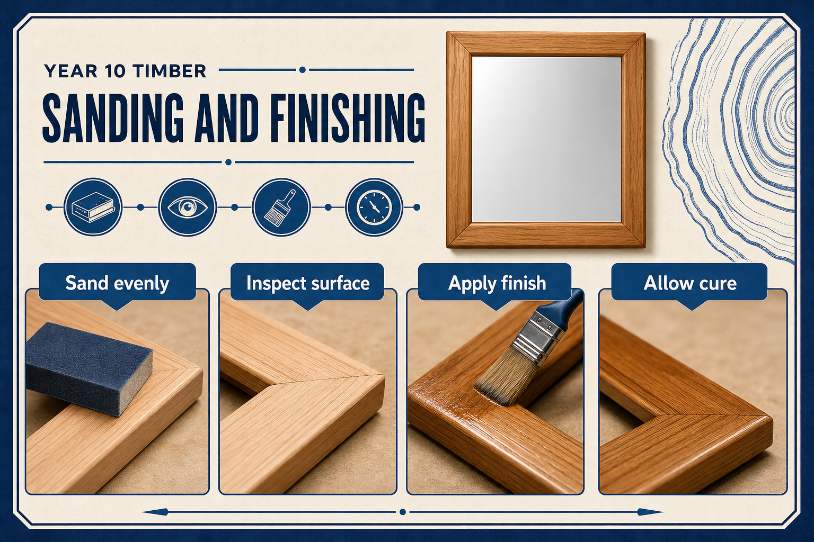
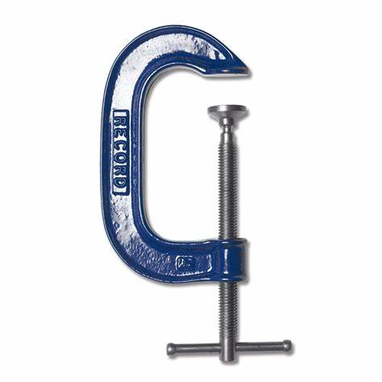

Key Idea
A good finish starts before the finish is opened.
Sanding removes machining marks and prepares the surface. Work through the grit sequence rather than jumping straight to fine paper. Dust must be removed before applying finish.
Theory Topic
Surface preparation, finish choice, safe application and cleanup.
Theory Block 6
Finishing protects the timber and improves the appearance. It only works well if the surface is prepared properly.
A good finish starts before the finish is opened.
Sanding removes machining marks and prepares the surface. Work through the grit sequence rather than jumping straight to fine paper. Dust must be removed before applying finish.
Finishing makes small errors stand out. Glue marks, deep scratches and dust are much easier to fix before the first coat goes on.
Wood finishes can be flammable or harmful if used badly. Read the label, use ventilation, wear required PPE, and follow MSDS instructions for storage, spills and disposal.

| Finish | Strength | Limit |
|---|---|---|
| Oil | Brings out grain and is easy to apply in thin coats. | Needs safe rag disposal and may need re-coating over time. |
| Wax | Gives a soft sheen and smooth feel. | Less protective against water and wear. |
| Varnish / polyurethane | More durable surface protection. | Can show brush marks, dust and runs if applied too thickly. |
| Stain plus clear coat | Changes colour while still showing grain. | Uneven sanding can make stain look blotchy. |
The first coat is not magic. It will not hide poor preparation; it usually highlights it. Before applying finish, students should check the frame under good light and run a hand lightly over the timber to feel scratches, glue spots and sharp edges.
Routed profiles, rebates and inside corners need a lighter touch than broad flat faces. Use a folded abrasive or suitable shaped backing where directed. Sand with the shape rather than flattening it, and compare matching sides of the frame as you work.
Each abrasive stage should remove the scratches from the previous stage. If deep scratches, glue marks or machining lines remain, return to the appropriate earlier stage instead of hoping a fine abrasive or finish will hide them.
| What you can see | Likely cause | Best response |
|---|---|---|
| Glue patches or pale areas | Glue was not removed before coating | Stop and ask how to prepare the surface correctly |
| Runs or thick glossy patches | Finish was applied too heavily | Use thin, even coats and follow drying instructions |
| Dust trapped in the surface | The work or area was not clean | Remove dust before applying the next approved coat |
| Uneven colour | Inconsistent sanding or surface preparation | Check the sanding sequence and discuss the correction |



Answer the Quick Check, then return to the theory menu when you are ready for another topic.